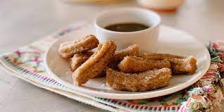

Churros

Ingredients (Makes about 15 Churros)
- 1 cup water
- 2 1/2 tablespoons granulated sugar
- 1/2 teaspoon salt
- 2 tablespoons vegetable oil
- 1 cup all-purpose flour
- Vegetable oil (for frying)
- 1/2 cup granulated sugar (for coating)
- 1 teaspoon ground cinnamon (for coating)
- Chocolate sauce or caramel sauce (for dipping, optional)
Preparation
MAKE THE CHURRO DOUGH AND FRY
Step 1
- In a saucepan, combine water, sugar, salt, and 2 tablespoons of vegetable oil. Bring the mixture to a boil.
Step 2
- Remove the saucepan from heat and add the all-purpose flour. Stir until a dough forms.
Step 3
- Heat vegetable oil in a deep pan or fryer to 375°F (190°C).
Step 4
- Transfer the churro dough to a piping bag fitted with a star tip.
Step 5
- Pipe 4-6 inch strips of dough directly into the hot oil, using scissors to cut the dough from the piping tip.
Step 6
- Fry the churros until golden brown, turning them with a slotted spoon for even cooking. This usually takes 2-4 minutes.
Step 7
- Remove the churros from the oil and place them on a plate lined with paper towels to absorb excess oil.
COAT AND SERVE
Step 1
- In a shallow dish, combine 1/2 cup granulated sugar and 1 teaspoon ground cinnamon.
Step 2
- Roll the warm churros in the sugar-cinnamon mixture until well coated.
Step 3
- Optional: Serve the churros with chocolate sauce or caramel sauce for dipping.
Step 4
- Enjoy your homemade churros immediately while they're still warm and crispy!